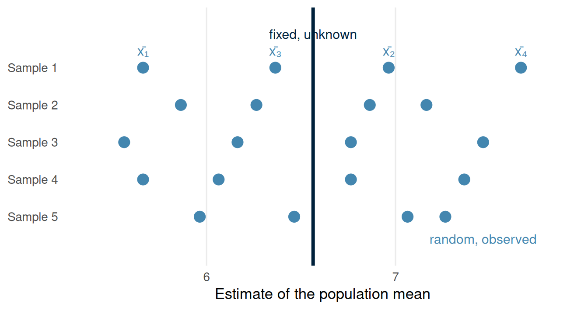
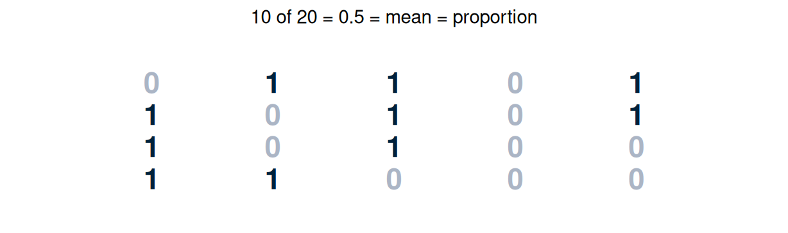
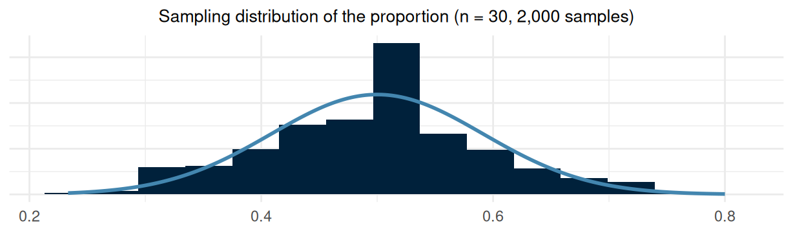
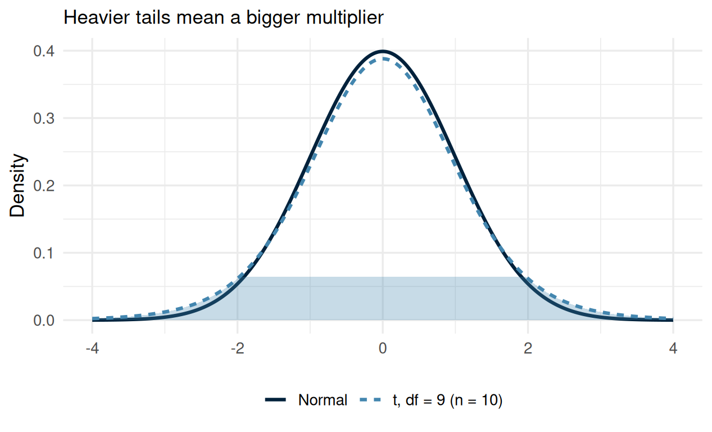
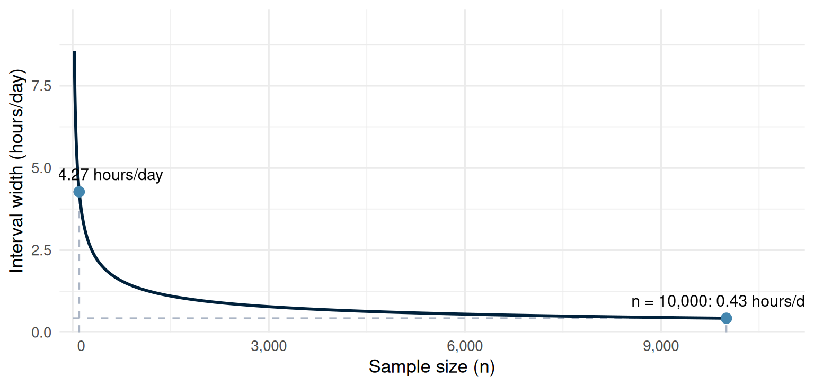
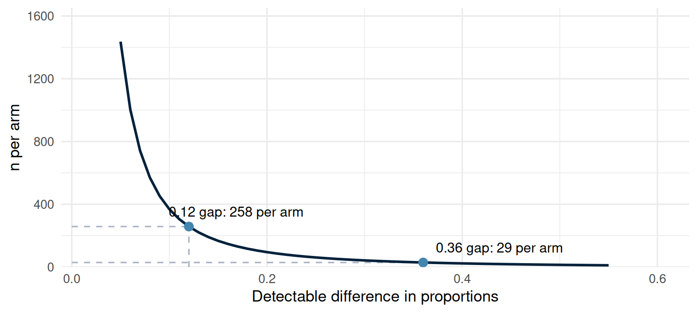

Week 8
sed described with a mean of 6.56 and an SD of 10.9 hours/day from 34,434 people, then the median (5 hours/day) and the IQR (3 to 8 hours/day) once the distribution turned out right-skewedBuilding an interval, then saying what it means

sed, right-skewed, in Chapter 4, which refers back to what this seminar showed\[SE = \frac{SD}{\sqrt{n}}\]
| Quantity | Mean | SD | N | SE |
|---|---|---|---|---|
| Sedentary time, hours/day | 6.56 | 10.9 | 34,434 | 0.0588 |
| Study | Mean | SD | n |
|---|---|---|---|
| Study A | 6.5 | 10.9 | 100 |
| Study B | 6.5 | 10.9 | 10000 |


\[SE = \sqrt{\frac{p(1-p)}{n}}\]
| Quantity | Proportion improved | N | SE |
|---|---|---|---|
| Improved, streptomycin trial | 0.514 | 107 | 0.0483 |

| Quantity | Estimate | 95% CI |
|---|---|---|
| Improved, streptomycin trial | 0.514 | 0.419 to 0.609 |
| Quantity | Mean | SD | N |
|---|---|---|---|
| Age, years | 47.5 | 18.5 | 41,765 |
‘Misinterpretation and abuse of statistical tests, confidence intervals, and statistical power have been decried for decades, yet remain rampant.’
‘We then provide an explanatory list of 25 misinterpretations of P values, confidence intervals, and power.’
Putting the interval to work, before the study even starts
| Quantity | Estimate | 95% CI | p |
|---|---|---|---|
| Cholesterol, women minus men, mmol/L | 0.169 | 0.147 to 0.19 | < 0.001 |
| Quantity | Estimate | 95% CI | p |
|---|---|---|---|
| Improved, streptomycin minus control | 0.364 | 0.169 to 0.559 | < 0.001 |

| Sample | n | 95% CI | Width |
|---|---|---|---|
| Full | 39176 | 4.963 to 4.984 | 0.022 |
| 50% subset | 19588 | 4.956 to 4.986 | 0.031 |
| 10% subset | 3917 | 4.934 to 5.001 | 0.067 |
\[n \approx \frac{7.8 \times \text{variability}}{\text{gap}^2}\]
| Proportion, control arm | Proportion, treatment arm | n per arm |
|---|---|---|
| 0.33 | 0.69 | 29 |
| Control arm | Treatment arm | Gap |
|---|---|---|
| 0.33 | 0.45 | 0.12 |

Judging the interpretation in somebody else’s writing
| Study | Result | Paper's conclusion | Link |
|---|---|---|---|
| Cao et al. (2020), NEJM | 28-day mortality 19.2% vs 25.0%, difference -5.8pp (95% CI -17.3 to 5.7) | '...no benefit was observed with lopinavir-ritonavir treatment beyond standard care.' | PubMed |
| Radonovich et al. (2019), JAMA | Influenza 8.2% vs 7.2% of person-seasons, difference 1.0pp (95% CI -0.5 to 2.5), p = 0.18 | '...resulted in no significant difference in the incidence of laboratory-confirmed influenza.' | PubMed |
| Williamson et al. (2020), Nature | HR 1.48 (1.29 to 1.69) Black; 1.45 (1.32 to 1.58) South Asian, vs white | 'Black and South Asian people were at higher risk, even after adjustment for other factors.' | PubMed |
nhanes_mph and strep_tb, and reconciles the hand calculations from today against the software’s answers